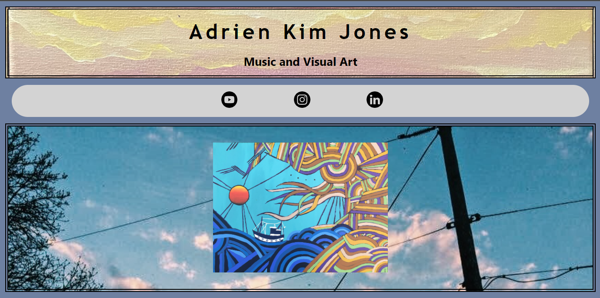
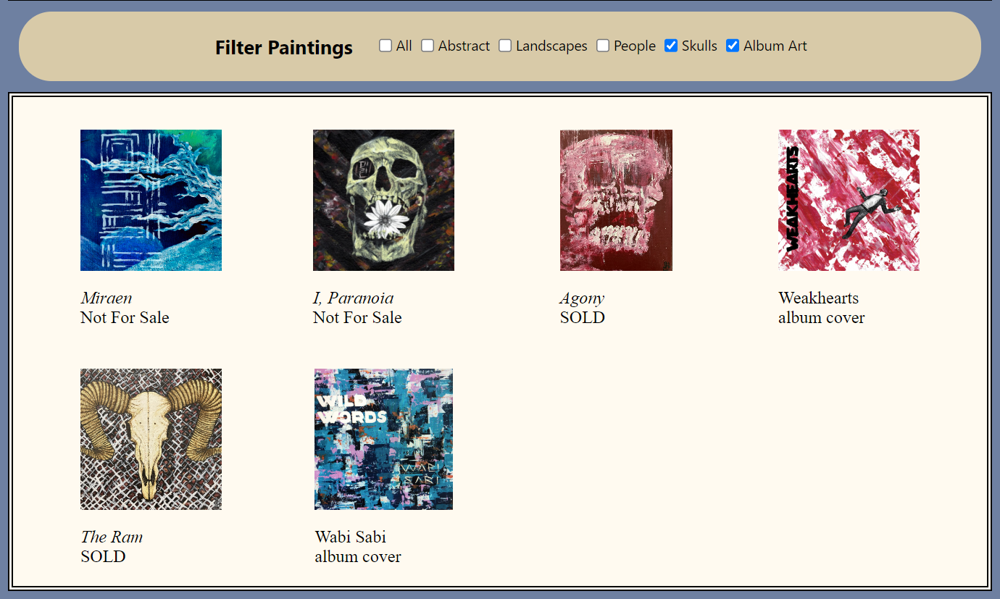
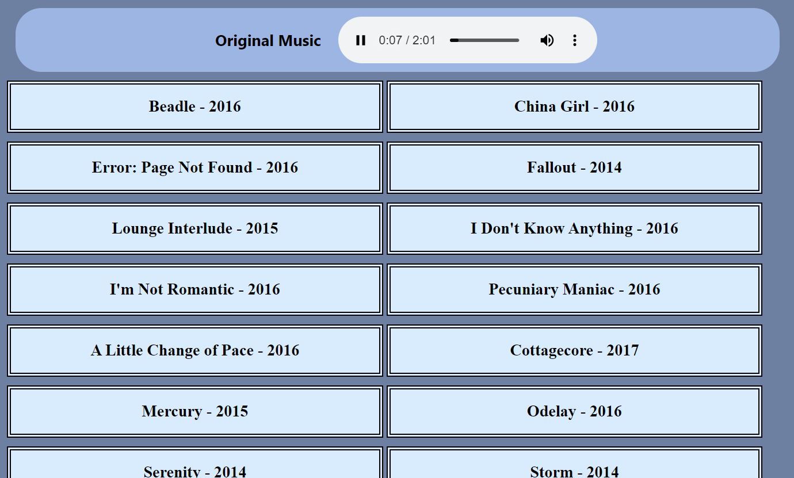

This is a static site showcasing my artwork and music.
It begins with an automatic slideshow of my paintings.
Then this section allows visitors to filter the paintings according to different categories.
The last section allows visitors to choose an original song to play.
 {% endblock %}